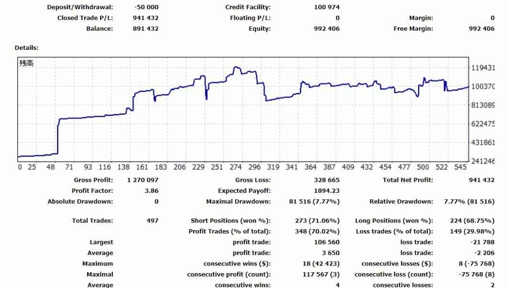
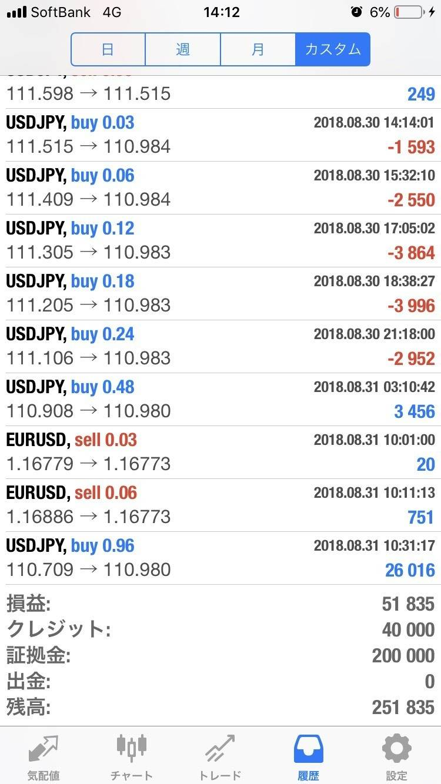

| FXで勝つためのたった１つの方法 最強メタトレーダー自動売買ツール | |
| 大石樹 | |
| (2019) | |
tatsuki
はじめに
こちらの『FXで勝ち続ける必勝入門書』の本書では、
FX 取引に関する指針を皆様にご紹介いたします。
そして、月利20％を達成するためのEAツールであります、
XX(ダブルエックス)のご紹介をいたします。
直接ご質問を希望の方は以下のLINE＠まで
ご質問していただきますようお願い申し上げます。
https://line.me/R/ti/p/%40mjh2997q
この本で紹介するFXの指針やテクニカルはFX に長年携わっている私が自ら作成いたしました。FXが初めてでも安心してわかる様に記載しており、初めて取り組む方でもわかりやすくしております。
＊＊＊＊＊＊＊＊＊＊＊＊＊＊＊＊＊＊＊＊＊＊＊＊＊＊＊＊＊＊＊＊
1. FXの基本事項
FXの取引で成功するためには何が必要なのか？それは、まず基本的なルールや操作をしっかりと確認し理解することが必要です。
この章でお伝えすることは『用語』『操作方法』になっていきます。
「FXを始めたいけどどうすればいいの？」とか、「どんな風に取引するの？」などです。
初心者級の疑問ですが基礎中の基礎なので覚えておきましょう！
１基本的な仕組みや操作を覚える
基本的にFXのワードを覚えなくてはなかなかチャートをマスターすることも不可能です。それゆえ、初心者の方は初めは不慣れかもしれませんが、「単語」をマスターすることから始めましょう。そのためには「単語」ゆえに「利益の計算方法」も覚えることが必然です。
・ 言葉やワードの意味を理解する。損益計算方法。取引画面の見方をマスターしよう！
・ 取引する注文の方法。操作方法
チャートやニュース、情報の見方をマスターしよう。
取引を始めたばかりのお客様に
取引を始めたばかりの初心者は「取引の基本動作」に慣れることから始まります。では、
ではどこの取引所を使ってFXをはじめればいいのか？ということになりますね。私はいつも
XM( https://clicks.pipaffiliates.com/c?c=376164&l=ja&p=1 ) という取引所で取引を行なっております。海外の取引所ですが、日本語に対応しているのが特徴でレバレッジも888倍まで効かせることが可能です。
そして、初心者の方はまずは『デモトレード』で何度も試してからが実践のスタートすることを推奨します。また、本格的に売買する前に、何度かレバレッジを低くして最小限の取引単位でテスト売買を行いデモとはまた違った感覚を感じましょう
２自身の投資スタイルを確認する
自分にあった投資ライフとは何か？それぞれ生活スタイルも違えば性格なども違ってきます。そのため割けるべき投資金額から時間まで全く違います。
・ FXに割ける時間や投資額を把握
・ 自身の強みや弱みを把握
トレードの目的や目標を把握
１ 投資スタイルと戦略
あなたの投資スタイルと戦略を生活スタイルや自身の好みや適性と合わせて考えてみましょう
あなたの投資についての考えはどれくらいになりますか?
経験はありますか？どれくらいの投資金がありますか？
それぞれ違ってくると思います。
まずは自己分析をしてみましょう
・ 投資資金はどれ位か? 使える時間は?
・ 投資の目的は何か? 目標値は?
現在の相場状況を確認
現在のチャートはいわゆるロウソク足と呼ばれるものから「月足」「日足」「時間足」と呼ばれるもので表示されています。そこから。上に上がるのか？下に上がるのか？
そう言ったことを読み取らなくてはいけません。
・「月足」⇒「週足」⇒「日足」。が基本的ですが、『時間軸』では細かく見ることができます。この様に、長い順にチャートを確認し、現在の価格が過去と比べて相対的にどう変化したのか？を確認する必要があります。
・ また過去のニュースやレポートを確認しファンダメンタルを見ることも必要です。今ならSNSでの反応もファンダメンタルに含まれます。通貨において何が重要視されているかを確認
ファンダメンタルズ分析入門
チャートの分析については「ファンダメンタルズ分析」と「テクニカル分析」の二つに分けることができます。どちらも覚える必要がございますが、 まずはファンダメンタルズ分析から説明していきます。ファンダメンタルズとは一言で言うと『経済の基礎的条件や基礎的指標』のことを表しています。
こうした観点から為替予想の方法として下記のことがわかります。
・購買力平価説
・経常収支説
・アセットアプローチ説 この他にも下記のようなアプローチがあります。
テクニカル分析とは
テクニカル分析は簡単に言えば各テクニカル指標を使用して、過去の値動きのパターンと現在の値動きのパターンを見比べて売買することです。
自分の得意なパターンをいくつか用意しておき、同じ動きになった場合は過去のパターンと同じ値動きをすると予想します。
テクニカル分析に用いるテクニカル指標は大きく3 つ(チャート分析、トレンドフォロー系とオシレ―ター 系)に分けられます。 各用語について説明していきます。
ロウソク足
4本値(始値・終値・高値・安値)で形成されています。 始値より終値が高い場合は陽線と呼ばれ、始値より終値が低い場合は陰線と呼ばれています。
トレンドライン
トレンドとは、一般的にマーケットの動く方向性を意味しますが、直線的ではなく、ジグザグな動きを展開 します。このジグザグの中における山と山、谷と谷を結ぶラインがトレンドラインです。 トレンドには、「上昇トレンド」「下落トレンド」「横ばい」トレンドの 3 つがあります。
チャート上のトレンドや支持・抵抗線はガラスやダイヤモンドのように固いものではなくクッション のように柔らかいもので、曖昧な部分を持っています。トレンドは崩れたように見えて再び元通りに戻るこ ともあります。
これを『ダマシ』と呼びます。チャートには『ダマシ』が必然的に現れます。そして、トレンドの上下は、堅い盾ではなく、柔らかいものだというイメージ を持ちましょう。
サポートとレジスタンス
レジスタンスラインは、高値同士を結んだ線のことです。 このレジスタンスラインは、心理的な節目として注目され、このラインを上に抜けるかどうかで相場の勢いが判断できます。
反対に、そのレジスタンスラインを抜けることができない相場であれば、下落する可能性 が高いことが予測できます。
また、サポートライン(下値支持線)は、安値同士を結んだ線のことです。このラインは、レジスタンスライン同様、心理的な節目として注目され、このラインを下に抜けるかどうか で相場の勢いが判断できます。 サポートラインを超えて相場が下落すると、トレンドに乗って相場はさらに下落する可能性が高くなり、 反対に、サポートラインを下に抜けることができないと、相場はそこから反転して上昇する可能性が高くな ります。
トレンドラインの引き方は二点以上の安値(高値)を結べば良いわけですが、 より有効的なトレンドラインを引くためには 3 つ、4 つの安値(高値)を結ぶとラインは信用度が高くなります。
ネックライン
ネックラインとは高値と高値、安値と安値,安値と高値を結んだ線のことです。一般的にこのネックラインを 上から下へ突破したら売りサインとされます。
そのほかにもテクニカル用語で【ダブルトップ】【ダブルボトム】【ヘッドアンドショルダー】、【中段保ち合 いパターン】等があります。 特にダブルトップは、天井を二回つけた後、下落する形のことを刺しています。前回高値付近で、「売りたい」と思う人が多くなると下落し、ダブルトップとなります。ネックラインを割り込むと大きく下落することが多くなります。 ダブルボトムはその反対の動きです。 ヘッドアンドショルダーは、天井を三回つけた後、下落する形で日本では「三尊天井」と呼びます。
損切りと手仕舞い
では、どのようにリスクを回避していくのがいいのか？
どのようなトレードにおいても、新規にポジションを持つ時よりポジションを決済する時の方が難しいもの です。 以下のようなことに注意することもリスク回避に繋がります。
・ 保有ポジションには所有欲が出て、手放し難い
・ 利食いを伸ばすこと、損切りを小さくすること、双方とも欲望と恐怖という感情に襲われる。
これらは大きな損失につながりやすい。 決済が上手くなるためには、『損切りに慣れる』が最も重要です。
次に、『損切りライン』を決めておくことです。エントリーポイント・利食いポイント・損切りポイントの 3 つを決めておくことです。 ストップは、入れないと大きく逆に行く。入れるとあっさりと成立し細かい損が積み上がるなど、最初は、 失敗することも多いでしょう。
急落・急騰と緩やかな変化。 投資家にとって相場が突然、急落・急騰した場合は、損切しやすい状態です。一瞬で損失が増えた場合、考 える間もなくポジションを処分もしくは、設定してあるストップが成立することにより損切が行われます。
FX 取引の失敗パターン
・売買に明確な決め事やルールがなく、全て感覚頼り
→損切りポイント、エントリーポイントを決めてレバレッジや資金管理を徹底する
・値ごろ感で取引を行う
→自分がお得と思っている値段は他の人もお得と思っているので、ダマシなどに会いやすい
・常に取引を行い休まない
→ポジションがわからなければポジションの保有をしない
・損切りが出来ない。利食いは早く損切りは遅い。
→損切りは経費と思いましょう
1~2 度の損失で資金を失ってしまうような過度に大きな取引を行う
→レバレッジは1倍での取引をしよう
・中立性に欠け、自分に都合の良いニュースや材料を探してしまい、冷静な判断が出来ない
・ストップを入れない、ストップを設定していても近づくとストップが成立しないように遠ざける
・感情に任せたトレードや平静を保てないトレード
・勝ちにおごり、負けに落ち込む
・1 回 1 回の取引に一喜一憂し、中長期的な視野で物事を考えない。
FXをやっている方はこれらの経験があるのではないでしょうか？
これらのことで一回でも思い当たる節がある人は失敗パターンということになります。
マネーマネジメント
マネーマネジメントは資金管理及び自身の投資行動の管理のことです。
単発的に見ると良い成績を残しながら、総合的に上手く行かない可能性や失敗に至る要因が不明なままでは総合的にみて失敗してしまいます。 そのため以下の２点に気をつけましょう。
1自身の資産を把握し、投資に回せる余力を把握する。
2サイクルの確立
自分の全体資産→投資に回せる資産→リスク許容度の確認→投資スタイルの決定→ポジションサイズの決定 (1 回あたりの取引額及び合計ポジション)→損益水準の決定(利幅目標・損失許容)→行動 このサイクルを見直しチェックを行うことが必要です。
一攫千金を狙うのではなく、生き残ることを考えてマネジメントは、行ってください。
実践、移動平均線
移動平均線はテクニカル指標の中でもっともポピュラーなもので、さまざまな売買の判断の際に使用されます。移動平均線とは、日足/週足/月足それぞれの移動平均を算出して、ラインで結んだ線です。つまり、 今日/今週/今月からある一定の期間を遡り、その間のレートを平均した値のことです。移動平均線を利用した売買判断では「グランビルの法則」「ゴールデン・クロス」な どが有名です。
移動平均線での売買のポイント 1
移動平均線の動きを利用
移動平均線が下向きから上向きに変わった地点が買いのポイントになります。移動平均線が上向きから下向きに変わった地点が売りのポイントになります。
実践、一目均衡表
一目均衡表は、『転換線・基準線』などの指標や、『時間論』『波動論』『値幅観測論』など
さまざまな、手法エオ組み合わせて相場を判断する方法です。
1基準線
『基準線の方向(上向き、下向き)がトレンドを示す』基本的なラインです。 上昇初期のトレンドが転換した初期には「基準線」が下値抵抗ラインの目処になると言われます。 計算式:過去26日間の最高値と最安値を足して2で割ったもの。
2転換線
「基準線」と同様に下値抵抗ラインの目安として利用できます。 計算式:過去9日間の最高値と最安値を足して 2 で割ったもの。
先行スパン
これまでの動きから、将来"抵抗ライン"として機能しそうな価格を表示します。
「先行スパンA」と、「先行スパンB」に挟まれた部分が「雲」といわれ、抵抗ラインとして使われます。
この雲には計算式があります
先行スパンA→「基準線」と「転換線」を足して2で割ったものにします。
先行スパンB→過去52日間の最高値と最安値を足して2で割ったもの。
先行スパンA、B共に、それぞれの値を26日先に(先行して)表示されます。 5遅行スパン 現在の価格と、遅行スパンの位置を見て相場のトレンドを探るために使われます。 計算式:当日の終値を当日を含めて26日前に(遅行させて)表示されます。
実践、移動平均線
移動平均線はテクニカル指標の中でもっともポピュラーなもので、さまざまな売買の判断の際に使用されます。移動平均線とは、日足/週足/月足それぞれの移動平均を算出して、ラインで結んだ線です。つまり、 今日/今週/今月からある一定の期間を遡り、その間のレートを平均した値のことです。移動平均線を利用した売買判断では「グランビルの法則」「ゴールデン・クロス」な どが有名です。
移動平均線での売買のポイント 1
移動平均線の動きを利用
移動平均線が下向きから上向きに変わった地点が買いのポイントになります。移動平均線が上向きから下向きに変わった地点が売りのポイントになります。
実践、一目均衡表
一目均衡表は、『転換線・基準線』などの指標や、『時間論』『波動論』『値幅観測論』など
さまざまな、手法エオ組み合わせて相場を判断する方法です。
1基準線
『基準線の方向(上向き、下向き)がトレンドを示す』基本的なラインです。 上昇初期のトレンドが転換した初期には「基準線」が下値抵抗ラインの目処になると言われます。 計算式:過去26日間の最高値と最安値を足して2で割ったもの。
2転換線
「基準線」と同様に下値抵抗ラインの目安として利用できます。 計算式:過去9日間の最高値と最安値を足して 2 で割ったもの。
先行スパン
これまでの動きから、将来"抵抗ライン"として機能しそうな価格を表示します。
「先行スパンA」と、「先行スパンB」に挟まれた部分が「雲」といわれ、抵抗ラインとして使われます。
この雲には計算式があります
先行スパンA→「基準線」と「転換線」を足して2で割ったものにします。
先行スパンB→過去52日間の最高値と最安値を足して2で割ったもの。
先行スパンA、B共に、それぞれの値を26日先に(先行して)表示されます。 5遅行スパン 現在の価格と、遅行スパンの位置を見て相場のトレンドを探るために使われます。 計算式:当日の終値を当日を含めて26日前に(遅行させて)表示されます。
MACD×RSIでお互いの弱点を埋めろ！
テクニカル指標を単体で使うことは、時として売買タイミングを計る判断材料として信頼性に欠ける場合があります。そのため、それぞれの特徴を活かしながら複数の分析手法を組み合わせることで、予測精度の向上が見込めます。
逆張り系の「RSI」は主に買われすぎ（＝売りサイン）、売られすぎ（＝買いサイン）を判断するのに用いられますが、単独での使用は判断材料として信頼性に欠けるときがあります。「RSI」は、一方的な相場動向が続いているときには効力を発揮しない傾向があります。「RSI」にトレンドの読み取りを得意とする「MACD」を組み合わせれば、トレンド系とオシレーター系の弱点を補うことで、予測の精度が上がってきます。
【ここだけのテクニカル分析表の裏技！】
中・長期は一目均衡表とロウソク足のパターンを重視する！
一目均衡表は短期、中期、長期、の半値の概念、モメンタムの概念(遅行線)などが 詰まったチャートです。
中長期を予測するときには、一目均衡表の週足を使っています。雲と実勢レートの位置関係からトレンドを判断しています。
短期的なトレンドの転換は、一目均衡表の雲からの乖離とロウソク足のパターンで判断。 雲からの乖離が大きくなったところで、ロウソク足のパターンが下図の丸印のようになった場合に、反転の 可能性が高いといえます。特に中央のダブルで底を打ったようなパターンは有力な手掛かりになります。
短期(デイ)トレードは 21 日移動平均線乖離率、ピボットポイントの組み合わせを重視
短期(デイ)トレードでは、チャート分析は21日移動平均線乖離率を使います。 強いトレンドが出ていない状態であれば 21 日移動平均線から乖離率が 3%~5%程度になると移動平均線に戻 る傾向があります。この行きすぎを狙います。
月利20%達成する
EAツール『XX TRADING』を紹介！
FX自動売買EAは、人の手を介さず自動的に売買取引を行ってくれるものです。
設定だけ行えば誰でも簡単に取引をします。
また、24時間
ずっと相場状況を監視して注文を出すので
チャートを見逃す心配なし！
そして、FXの勉強をする時間がない人にも有効です。FX自動売買EAは
人の手を介さず自動的に売買取引を行ってくれるものです。
設定だけ行えば誰でも簡単に取引をします。
また、24時間
ずっと相場状況を監視して注文を出すので
チャートを見逃す心配なし！
そして、FXの勉強をする時間がない人にも有効です。

上記のXX(ダブルエックス) TRADING は
独自開発した最高のFX自動売買EA！
簡単な設定だけで
完全自動で取引を行ってくれます。
初期投資20万円でスタートした
実際の資産チャートです！
システムが稼働すると資産が
200万円を超えてくるとレバレッジが
下がってしまいますので
結果、運用効率が下がるので、
ある程度のタイミングで出金している。
そのため、チャートが下がっているのは、
大きく負けた訳ではなく出金しているからです。

LINE＠で詳しい情報をさらにお届け
月利20%を獲得できるEAツール
『XX TRADING』の詳細はLINE@で直接お問い合わせすることができます。
https://line.me/R/ti/p/%40mjh2997q
XX TRADINGホームページ
https://peraichi.com/landing_pages/view/xxtrading
＊＊＊＊＊＊＊＊＊＊＊＊＊＊＊＊＊＊＊＊＊＊＊＊＊＊＊＊＊＊＊＊＊＊＊＊＊＊＊＊＊＊＊＊＊＊＊＊＊
LINE＠では詳しい情報をさらにお届け
https://line.me/R/ti/p/%40mjh2997q